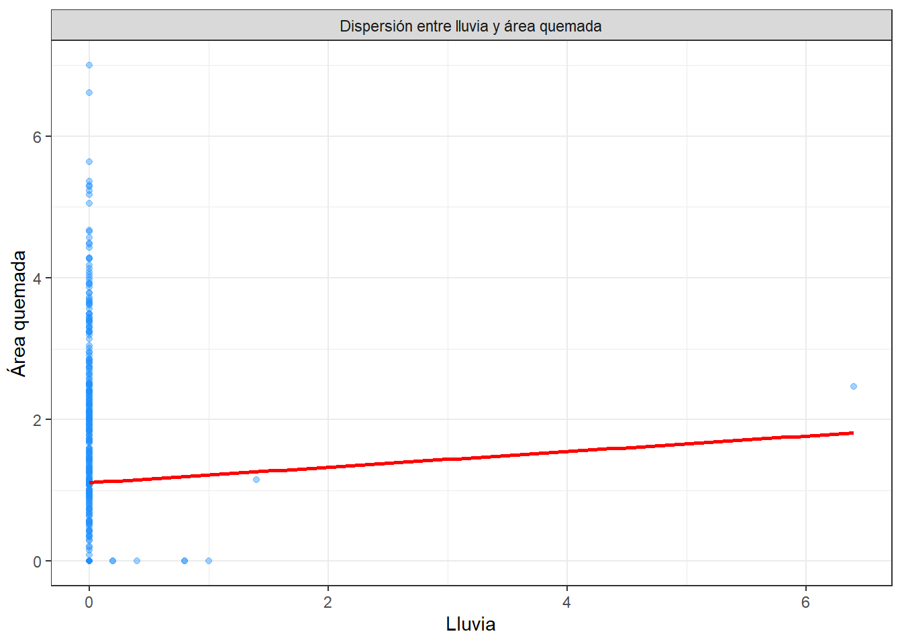

Chapter 2 Análisis Exploratorio de Datos (EDA)
2.1 Librerías
## Cargando paquete requerido: Rcpp## ##
## ## Amelia II: Multiple Imputation
## ## (Version 1.8.3, built: 2024-11-07)
## ## Copyright (C) 2005-2025 James Honaker, Gary King and Matthew Blackwell
## ## Refer to http://gking.harvard.edu/amelia/ for more information
## #### ── Attaching core tidyverse packages ──────────────────────── tidyverse 2.0.0 ──
## ✔ dplyr 1.1.4 ✔ readr 2.1.5
## ✔ forcats 1.0.0 ✔ stringr 1.5.1
## ✔ ggplot2 3.5.2 ✔ tibble 3.3.0
## ✔ lubridate 1.9.4 ✔ tidyr 1.3.1
## ✔ purrr 1.1.0## ── Conflicts ────────────────────────────────────────── tidyverse_conflicts() ──
## ✖ dplyr::filter() masks stats::filter()
## ✖ dplyr::lag() masks stats::lag()
## ℹ Use the conflicted package (<http://conflicted.r-lib.org/>) to force all conflicts to become errors2.2 Datos
## [1] 517 13## [1] "X" "Y" "month" "day" "FFMC" "DMC" "DC" "ISI" "temp"
## [10] "RH" "wind" "rain" "area"## tibble [517 × 13] (S3: tbl_df/tbl/data.frame)
## $ X : num [1:517] 7 7 7 8 8 8 8 8 8 7 ...
## $ Y : num [1:517] 5 4 4 6 6 6 6 6 6 5 ...
## $ month: chr [1:517] "mar" "oct" "oct" "mar" ...
## $ day : chr [1:517] "fri" "tue" "sat" "fri" ...
## $ FFMC : num [1:517] 86.2 90.6 90.6 91.7 89.3 92.3 92.3 91.5 91 92.5 ...
## $ DMC : num [1:517] 26.2 35.4 43.7 33.3 51.3 ...
## $ DC : num [1:517] 94.3 669.1 686.9 77.5 102.2 ...
## $ ISI : num [1:517] 5.1 6.7 6.7 9 9.6 14.7 8.5 10.7 7 7.1 ...
## $ temp : num [1:517] 8.2 18 14.6 8.3 11.4 22.2 24.1 8 13.1 22.8 ...
## $ RH : num [1:517] 51 33 33 97 99 29 27 86 63 40 ...
## $ wind : num [1:517] 6.7 0.9 1.3 4 1.8 5.4 3.1 2.2 5.4 4 ...
## $ rain : num [1:517] 0 0 0 0.2 0 0 0 0 0 0 ...
## $ area : num [1:517] 0 0 0 0 0 0 0 0 0 0 ...## # A tibble: 1 × 13
## X Y month day FFMC DMC DC ISI temp RH wind rain area
## <int> <int> <int> <int> <int> <int> <int> <int> <int> <int> <int> <int> <int>
## 1 0 0 0 0 0 0 0 0 0 0 0 0 0## Warning: Unknown or uninitialised column: `arguments`.
## Unknown or uninitialised column: `arguments`.## Warning: Unknown or uninitialised column: `imputations`.
No hay datos faltantes
2.3 Análisis de la variable target (área)
df %>%
summarise(n=length(area),
prom = mean(area),
ds = sd(area),
mediana = median(area),
RIC = IQR(area),
minimo = min(area),
maximo = max(area),
Q1 = quantile(area, 0.25),
Q3 = quantile(area, 0.75))## n prom ds mediana RIC minimo maximo Q1 Q3
## 1 517 12.84729 63.65582 0.52 6.57 0 1090.84 0 6.57df %>%
ggplot(aes(x=area)) +
geom_histogram(aes(y=after_stat(density))) +
geom_density(color="blue") +
theme_bw()## `stat_bin()` using `bins = 30`. Pick better value with `binwidth`.df %>%
ggplot(aes(x = "", y = area)) +
geom_boxplot(fill = "#a6cee3", color = "#1f78b4", outlier.color = "red") +
stat_summary(
fun = mean,
geom = "point",
shape = 20,
size = 3,
color = "black"
) +
labs(
title = "Diagrama de cajas y bigotes de área quemada",
x = "",
y = "Área quemada"
) +
theme_bw()
Se aprecia un fuerte sesgo hacia la derecha, debido a que la mayoría de observaciones de la variable área son 0 o valores muy cercanos a este.
df %>%
summarise(n=length(area_log),
prom = mean(area_log),
ds = sd(area_log),
mediana = median(area_log),
RIC = IQR(area_log),
minimo = min(area_log),
maximo = max(area_log),
Q1 = quantile(area_log, 0.25),
Q3 = quantile(area_log, 0.75))## n prom ds mediana RIC minimo maximo Q1 Q3
## 1 517 1.111026 1.398436 0.4187103 2.024193 0 6.99562 0 2.024193df %>%
ggplot(aes(x=area_log)) +
geom_histogram(aes(y=after_stat(density))) +
geom_density(color="blue") +
theme_bw()## `stat_bin()` using `bins = 30`. Pick better value with `binwidth`.df %>%
ggplot(aes(x = "", y = area_log)) +
geom_boxplot(fill = "#a6cee3", color = "#1f78b4", outlier.color = "red") +
stat_summary(
fun = mean,
geom = "point",
shape = 20,
size = 3,
color = "black"
) +
labs(
title = "Diagrama de cajas y bigotes de área quemada",
x = "",
y = "Área quemada"
) +
theme_bw()Como solución al fuerte sesgo, la variable área se le aplicó area_log = log(area+1). El +1 evita problemas con valores 0, ya que log(0) no está definido. Después de la transformación, los 0 y valores cercanos no varían mucho, pero los extremos bajan considerablemente, resultando en una distribución más manejable para hacer el análisis.
2.4 Variables independientes numéricas
df %>%
summarise(
n = length(FFMC),
media = mean(FFMC),
ds = sd(FFMC),
mediana = median(FFMC),
minimo = min(FFMC),
maximo = max(FFMC),
Q1 = quantile(FFMC, 0.25),
Q3 = quantile(FFMC, 0.75),
IQR = IQR(FFMC)) %>%
mutate(variable = "FFMC") -> ffmc
df %>%
summarise(
n = length(DMC),
media = mean(DMC),
ds = sd(DMC),
mediana = median(DMC),
minimo = min(DMC),
maximo = max(DMC),
Q1 = quantile(DMC, 0.25),
Q3 = quantile(DMC, 0.75),
IQR = IQR(DMC)) %>%
mutate(variable = "DMC") -> dmc
df %>%
summarise(
n = length(DC),
media = mean(DC),
ds = sd(DC),
mediana = median(DC),
minimo = min(DC),
maximo = max(DC),
Q1 = quantile(DC, 0.25),
Q3 = quantile(DC, 0.75),
IQR = IQR(DC)) %>%
mutate(variable = "DC")-> dc
df %>%
summarise(
n = length(ISI),
media = mean(ISI),
ds = sd(ISI),
mediana = median(ISI),
minimo = min(ISI),
maximo = max(ISI),
Q1 = quantile(ISI, 0.25),
Q3 = quantile(ISI, 0.75),
IQR = IQR(ISI)) %>%
mutate(variable = "ISI")-> isi
df %>%
summarise(
n = length(temp),
media = mean(temp),
ds = sd(temp),
mediana = median(temp),
minimo = min(temp),
maximo = max(temp),
Q1 = quantile(temp, 0.25),
Q3 = quantile(temp, 0.75),
IQR = IQR(temp)) %>%
mutate(variable = "temp")-> temp
df %>%
summarise(
n = length(RH),
media = mean(RH),
ds = sd(RH),
mediana = median(RH),
minimo = min(RH),
maximo = max(RH),
Q1 = quantile(RH, 0.25),
Q3 = quantile(RH, 0.75),
IQR = IQR(RH)) %>%
mutate(variable = "RH")-> rh
df %>%
summarise(
n = length(wind),
media = mean(wind),
ds = sd(wind),
mediana = median(wind),
minimo = min(wind),
maximo = max(wind),
Q1 = quantile(wind, 0.25),
Q3 = quantile(wind, 0.75),
IQR = IQR(wind)) %>%
mutate(variable = "wind")-> wind
df %>%
summarise(
n = length(rain),
media = mean(rain),
ds = sd(rain),
mediana = median(rain),
minimo = min(rain),
maximo = max(rain),
Q1 = quantile(rain, 0.25),
Q3 = quantile(rain, 0.75),
IQR = IQR(rain)) %>%
mutate(variable = "rain")-> rain## variable n media ds mediana minimo maximo Q1 Q3 IQR
## 1 FFMC 517 90.64468085 5.5201108 91.6 18.7 96.2 90.2 92.9 2.7
## 2 DMC 517 110.87234043 64.0464822 108.3 1.1 291.3 68.6 142.4 73.8
## 3 DC 517 547.94003868 248.0661917 664.2 7.9 860.6 437.7 713.9 276.2
## 4 ISI 517 9.02166344 4.5594772 8.4 0.0 56.1 6.5 10.8 4.3
## 5 temp 517 18.88916828 5.8066253 19.3 2.2 33.3 15.5 22.8 7.3
## 6 RH 517 44.28820116 16.3174692 42.0 15.0 100.0 33.0 53.0 20.0
## 7 wind 517 4.01760155 1.7916526 4.0 0.4 9.4 2.7 4.9 2.2
## 8 rain 517 0.02166344 0.2959591 0.0 0.0 6.4 0.0 0.0 0.0box_plot_var <- function(data, var, titulo, ylab) {
ggplot(data, aes(x = "", y = !!sym(var))) +
geom_boxplot(fill = "#a6cee3", color = "#1f78b4", outlier.color = "red") +
stat_summary(fun = mean, geom = "point", shape = 20, size = 3, color = "black") +
labs(title = titulo, x = "", y = ylab) +
theme_bw()
}
# Crear cada gráfico
p1 <- box_plot_var(df, "FFMC", "FFMC", "Índice FFMC")
p2 <- box_plot_var(df, "DMC", "DMC", "Índice DMC")
p3 <- box_plot_var(df, "DC", "DC", "Índice DC")
p4 <- box_plot_var(df, "ISI", "ISI", "ISI")
p5 <- box_plot_var(df, "temp", "temp", "Temperatura")
p6 <- box_plot_var(df, "RH", "RH", "RH")
p7 <- box_plot_var(df, "wind", "wind", "Viento")
p8 <- box_plot_var(df, "rain", "rain", "Lluvia")
# Juntar todo en una sola imagen (4 columnas x 2 filas)
(p1 | p2 | p3 | p4) /
(p5 | p6 | p7 | p8)2.5 Variables independientes categóricas
df$month <- factor(df$month,
levels = c("jan", "feb", "mar", "apr", "may", "jun",
"jul", "aug", "sep", "oct", "nov", "dec"))
tabla_month <- df %>%
count(month, name="Frecuencia") %>%
mutate(
Porcentaje = round(
(Frecuencia/sum(Frecuencia))*100,1),
Etiqueta = paste0(Frecuencia, " (",Porcentaje,"%)"))g_mes <- ggplot(tabla_month, aes(x = month, y = Frecuencia)) +
geom_col(fill = "#A0ABFF", width = 0.6) +
geom_text(aes(label = Etiqueta), vjust = -0.5, size = 3) +
facet_wrap(~ "Distribución de la variable month") +
scale_y_continuous(expand = expansion(mult = c(0, 0.15))) +
labs(x = "Mes del año", y = "Frecuencia (Porcentaje)") +
theme_bw(base_size = 8) +
theme(
plot.title = element_blank(),
strip.background = element_rect(fill = "gray80", color = NA),
strip.text = element_text(face = "bold"),
panel.grid.major.x = element_blank()
)df$day <- factor(df$day,
levels = c("mon", "tue", "wed", "thu", "fri", "sat", "sun"))
tabla_day <- df %>%
count(day, name="Frecuencia") %>%
mutate(
Porcentaje = round(
(Frecuencia/sum(Frecuencia))*100,1),
Etiqueta = paste0(Frecuencia, " (",Porcentaje,"%)"))g_dia <- ggplot(tabla_day, aes(x = day, y = Frecuencia)) +
geom_col(fill = "#A0ABFF", width = 0.6) +
geom_text(aes(label = Etiqueta), vjust = -0.5, size = 3) +
facet_wrap(~ "Distribución de la variable day") +
scale_y_continuous(expand = expansion(mult = c(0, 0.15))) +
labs(x = "Día de la semana", y = "Frecuencia (Porcentaje)") +
theme_bw(base_size = 8) +
theme(
plot.title = element_blank(),
strip.background = element_rect(fill = "gray80", color = NA),
strip.text = element_text(face = "bold"),
panel.grid.major.x = element_blank()
)
2.6 Análisis bivariado num vs num
df %>%
ggplot(aes(x = FFMC, y = area_log)) +
geom_point(alpha = 0.4, color = "#1E90FF") +
geom_smooth(method = "lm", formula = y ~ x, se = FALSE, color = "red") +
labs(x = "FFMC",
y = "Área quemada"
) +
theme_bw()+
facet_grid(.~ "Dispersión entre FFMC y área quemada")df %>%
ggplot(aes(x = DMC, y = area_log)) +
geom_point(alpha = 0.4, color = "#1E90FF") +
geom_smooth(method = "lm", formula = y ~ x, se = FALSE, color = "red") +
labs(x = "DMC",
y = "Área quemada"
) +
theme_bw()+
facet_grid(.~ "Dispersión entre DMC y área quemada")
df %>%
ggplot(aes(x = DC, y = area_log)) +
geom_point(alpha = 0.4, color = "#1E90FF") +
geom_smooth(method = "lm", formula = y ~ x, se = FALSE, color = "red") +
labs(x = "DMC",
y = "Área quemada"
) +
theme_bw()+
facet_grid(.~ "Dispersión entre DC y área quemada")df %>%
ggplot(aes(x = ISI, y = area_log)) +
geom_point(alpha = 0.4, color = "#1E90FF") +
geom_smooth(method = "lm", formula = y ~ x, se = FALSE, color = "red") +
labs(x = "ISI",
y = "Área quemada"
) +
theme_bw()+
facet_grid(.~ "Dispersión entre ISI y área quemada")df %>%
ggplot(aes(x = temp, y = area_log)) +
geom_point(alpha = 0.4, color = "#1E90FF") +
geom_smooth(method = "lm", formula = y ~ x, se = FALSE, color = "red") +
labs(x = "Temperatura",
y = "Área quemada"
) +
theme_bw()+
facet_grid(.~ "Dispersión entre temperatura y área quemada")df %>%
ggplot(aes(x = RH, y = area_log)) +
geom_point(alpha = 0.4, color = "#1E90FF") +
geom_smooth(method = "lm", formula = y ~ x, se = FALSE, color = "red") +
labs(x = "Humedad relativa",
y = "Área quemada"
) +
theme_bw()+
facet_grid(.~ "Dispersión entre RH y área quemada")df %>%
ggplot(aes(x = rain, y = area_log)) +
geom_point(alpha = 0.4, color = "#1E90FF") +
geom_smooth(method = "lm", formula = y ~ x, se = FALSE, color = "red") +
labs(x = "Lluvia",
y = "Área quemada"
) +
theme_bw()+
facet_grid(.~ "Dispersión entre lluvia y área quemada")
2.7 Análisis bivariado num vs cat
# Agrupación por "month"
agrup_month <- df %>%
group_by(month) %>%
summarise(n = length(area_log),
media = mean(area_log),
ds = sd(area_log),
mediana = median(area_log),
minimo = min(area_log),
maximo = max(area_log),
Q1 = quantile(area_log, 0.25),
Q3 = quantile(area_log, 0.75),
IQR = IQR(area_log)) %>%
mutate(variable = "month", niveles = as.character(month)) %>%
select(variable, niveles, everything(), -month)
g1 <- df %>%
ggplot(aes(x = month, y = area_log)) +
geom_boxplot(fill = "#87CEFA", outlier.colour = "red", outlier.shape = 16) +
stat_summary(fun = mean, geom = "point", shape = 18, size = 3, color = "darkblue") +
labs(x = "Mes del año", y = "Área quemada") +
theme_bw() +
facet_grid(.~"Distribución de área quemada por meses del año")agrup_day <- df %>%
group_by(day) %>%
summarise(n = length(area_log),
media = mean(area_log),
ds = sd(area_log),
mediana = median(area_log),
minimo = min(area_log),
maximo = max(area_log),
Q1 = quantile(area_log, 0.25),
Q3 = quantile(area_log, 0.75),
IQR = IQR(area_log)) %>%
mutate(variable = "day", niveles = as.character(day)) %>%
select(variable, niveles, everything(), -day)
g2 <- df %>%
ggplot(aes(x = day, y = area_log)) +
geom_boxplot(fill = "#87CEFA", outlier.colour = "red", outlier.shape = 16) +
stat_summary(fun = mean, geom = "point", shape = 18, size = 3, color = "darkblue") +
labs(x = "Días de la semana", y = "Área quemada") +
theme_bw() +
facet_grid(.~"Distribución de área quemada por día de la semana")## # A tibble: 19 × 11
## variable niveles n media ds mediana minimo maximo Q1 Q3 IQR
## <chr> <chr> <int> <dbl> <dbl> <dbl> <dbl> <dbl> <dbl> <dbl> <dbl>
## 1 month jan 2 0 0 0 0 0 0 0 0
## 2 month feb 20 1.09 1.29 0.371 0 3.97 0 2.01 2.01
## 3 month mar 54 0.773 1.19 0 0 3.63 0 1.39 1.39
## 4 month apr 9 1.09 1.49 0 0 4.13 0 1.72 1.72
## 5 month may 2 1.84 2.60 1.84 0 3.68 0.919 2.76 1.84
## 6 month jun 17 0.843 1.21 0 0 4.27 0 1.43 1.43
## 7 month jul 32 1.08 1.42 0.698 0 5.63 0 2.00 2.00
## 8 month aug 184 1.05 1.36 0.435 0 6.62 0 1.80 1.80
## 9 month sep 172 1.27 1.50 0.858 0 7.00 0 2.15 2.15
## 10 month oct 15 0.917 1.42 0 0 3.92 0 1.96 1.96
## 11 month nov 1 0 NA 0 0 0 0 0 0
## 12 month dec 9 2.57 0.449 2.46 1.85 3.25 2.33 2.94 0.607
## 13 day mon 74 1.09 1.34 0.550 0 5.63 0 1.95 1.95
## 14 day tue 64 1.23 1.48 0.500 0 5.37 0 2.29 2.29
## 15 day wed 54 1.11 1.38 0.565 0 5.23 0 1.91 1.91
## 16 day thu 61 1.03 1.32 0.642 0 6.62 0 1.78 1.78
## 17 day fri 85 0.970 1.21 0.285 0 3.79 0 1.94 1.94
## 18 day sat 84 1.23 1.61 0.259 0 7.00 0 2.15 2.15
## 19 day sun 95 1.12 1.43 0 0 5.29 0 2.05 2.05